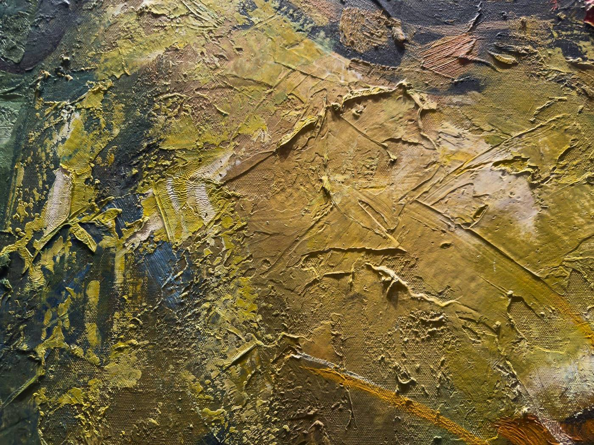
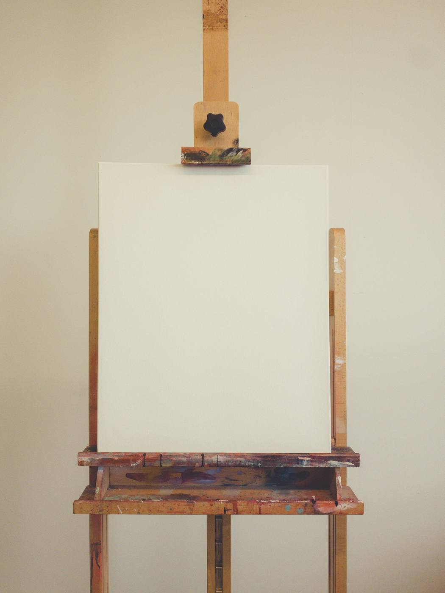

Płótno
Zaczynam od czystego płótna i szkicu w głowie, rzadko na papierze.

„Nie każda historia wymaga słów. Niektóre znajdują swój wyraz w sztuce.”
01O mnie
Maluję obrazy, które chce się dotknąć.
Pracuję szpachlą i pędzlem, warstwa po warstwie, aż farba zacznie rzucać własny cień.
Tworzę obrazy strukturalne i klasyczne płótna — pejzaże, abstrakcje, światło. Każdy powstaje ręcznie, w jednym egzemplarzu.
— Patrycja

02Prace
Czternaście obrazów, każdy w jednym egzemplarzu. Kliknij, żeby obejrzeć z bliska.
Każdy obraz powstaje ręcznie, w jednym egzemplarzu

Na ścianie
Obraz nie wisi na ścianie. On ją zmienia.— Patrycja
03Cztery kroki
Zaczynam od czystego płótna i szkicu w głowie, rzadko na papierze.

Szpachle, pędzle, pasta strukturalna. Każde narzędzie zostawia inny ślad.

Nakładam farbę grubo, warstwa po warstwie. Część musi schnąć kilka dni.

Na końcu sprawdzam obraz w bocznym świetle — dopiero wtedy widać fakturę.
04Kontakt
Chcesz zapytać o obraz albo zamówić pracę na wymiar? Napisz.